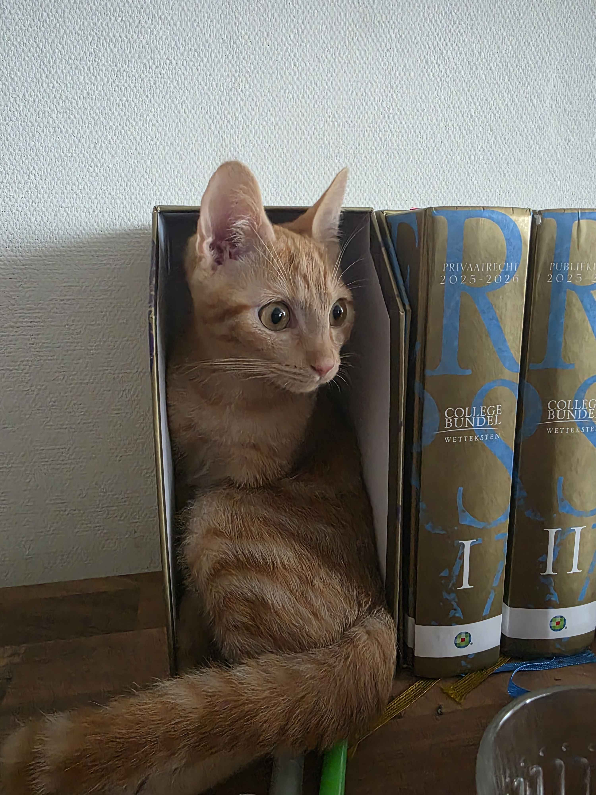

Over Mij
Wie ben ik?
Mijn naam is Dylan den Boer en ik ben geboren op 13 april 2004 in Maastricht. Tegenwoordig woon ik samen met mijn partner en onze kat Lasagna.
In mijn vrije tijd breng ik graag tijd door achter de computer en ben ik veel bezig met verschillende onderwerpen binnen de IT. Technologie heeft mij altijd geïnteresseerd en ik vind het leuk om nieuwe dingen te leren en mijn kennis verder uit te breiden.
Naast mijn interesse in IT game ik ook graag. Mijn favoriete game is Valorant, waar ik veel uren in heb zitten. Hoewel ik momenteel hardstuck Ascendant ben, blijf ik mezelf uitdagen om beter te worden en mijn rank verder omhoog te krijgen.
Ook ben ik een grote fan van Pokémon. Zowel de games als de wereld achter Pokémon spreken mij aan. Ik vind het leuk om nieuwe teams samen te stellen en verschillende strategieën uit te proberen.

Mijn kat Lasagna
Verder houd ik ervan om nieuwe technologieën te ontdekken, problemen op te lossen en mezelf continu te ontwikkelen. Ik ben leergierig, gemotiveerd en werk graag aan projecten waarbij ik zowel mijn technische vaardigheden als mijn creativiteit kan gebruiken.
Deze combinatie van interesses maakt dat ik altijd op zoek ben naar nieuwe uitdagingen en mogelijkheden om mezelf verder te verbeteren.
Mijn opleiding
Ik studeer bij VISTA College voor Systeem Engineer. Tijdens mijn opleiding ben ik bezig met verschillende onderdelen binnen de IT.
Naast systeembeheer maak ik ook regelmatig software development opdrachten. Zo heb ik verschillende opdrachten gemaakt met Python en werk ik aan projecten om mijn programmeerkennis verder te ontwikkelen.
Een aantal van mijn projecten zijn terug te vinden op mijn GitHub.
Bekijk mijn GitHub